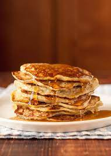

Banana Pancakes

Description
Three Ingredient Banana and Egg Pancakes come together in less than 10 minutes with three simple ingredients - eggs, bananas, and regular or paleo flour. They are delicious, good for you, and a recipe you will make again and again.
Ingredients
- 1 banana
- 1 egg
- 2 tbsp whole wheat flour (or coconut)
Steps
- Mash the banana using a fork. The riper your banana, the easy it will be to mash and the more flour it will have.
- Whisk in the egg using a fork. Stir well so fully combined.
- Then whisk in the flour and stir until just combined. Do not overmix.
- Heat a nonstick skillet over medium heat. Spray with cooking spray and add the batter. Cook for 2-3 minutes per side, flipping when bubbles begin to pop and edges brown.
- Serve hot with all your favorite toppings.